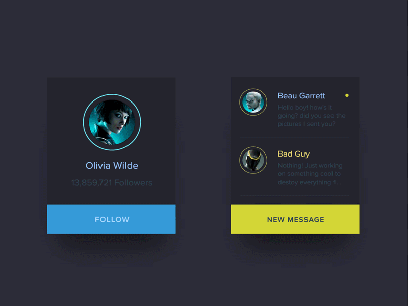
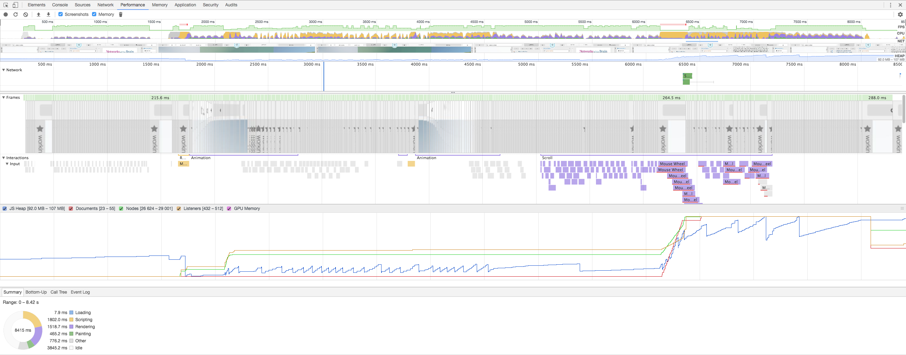

UX Butter
Reducing App Friction
Created by John Martin / @johndavidfive
Agenda
- Define "Buttery"
- Discuss how to measure Butter
- How to improve Butteryness
When is UX Buttery?
Subjective Definition:
Users say experience is "SMOOTH".
Examples of "SMOOTH"...
Smooth
NOT Smooth
Smooth
NOT Smooth
Smooth
NOT Smooth
Objective Definition:
Users experience minimal friction.
Finding Friction
Web UX Friction Types
- Static Friction
- Transitional Friction
Static Friction

Transitional Friction
- Responsiveness Issues
- Frame Rate Issues
- Incoherent / Gratuitous Transitions
Transitional Friction Challenge
Which has more friction (A) or (B)?
Transition (A)
Transition (B)
Friction is Subjective
- (A) button changes role when clicked
- (B) assumes user knows bottle is clickable
Where Does Friction Occur?
Sources of Friction
- Hardware Level
- Platform Level ( Browser / OS )
- Application Level
Hardware Friction
- Low Resolution / Contrast ( static friction )
- Poor Performance ( transitional friction )
Hardware: Reduce Static Friction
Improve Resolution / Contrast / Color
Hardware: Reduce T-Fric 1
Improve Display / Processor Performance
Hardware: Reduce T-Fric 2
Improve Display / IO Performance
Platform Friction
- Bad Performance ( transitional )
- Hardware Interface ( transitional / static )
- Bad Abstractions ( transitional / static )
Reduce Platform Friction?
Pick a different platform!
( ie. get rid of IE ;-) )
APP Friction
- Complex Business Logic ( s & t )
- Poor Design ( s & t )
- Inconsistent Patterns ( s )
- Novel Patterns ( s )
- Poor Performance ( t )
- Violating Platform Conventions ( s & t )
- Violating Hardware Conventions ( s & t )
( Complex business logic and poor design lead to bad code resuability )
Our Focus for Today
Application Transitional Friction
( AKA: T-Fric )
Application T-Fric
Responsiveness & Frame Rate
Responsiveness
How fast system responds to user interaction.
- 100 ms the system is reacting instantaneously
- 1000 ms user's flow of thought uninterrupted
- 10 seconds keep attention on dialogue.
( https://www.nngroup.com/articles/response-times-3-important-limits/ )
Frame Rate (FPS/Hz)
FPS during any transition.
- Current standard is 60 Hz
- 200 Hz seems to be the human limit
- Simon Cook: 84 Hz eye jelly fluctuations
- Diminishing returns at about 60 Hz
- Apple has "ProMotion" devices @ 120 Hz
Transitional Friction
It's more than just responsiveness and FPS...
It's about Consistency
- Inconsitency = JANK
- JANK = Broken
- Broken = Reduction in Trust
( Think video game lag... aaaargh, RAGE QUIT! )
Measuring T-Fric
Visual Inspection
Click around, look for JANK ( ie. user testing ).
Scripts / Automation
Run scripts to detect JANK
( Dev tools do not expose data to the page... yet! )
Developer Tools
Record a perf snapshot!
Fixing T-Fric
Goal Consistent 60 FPS
- Scrolling
- Interacting
- Animations
Why do these cause slow down?
The "Pixel Pipeline"
( https://developers.google.com/web/fundamentals/performance/rendering/ )
Pipeline Stages
- Scripting ( slow code )
- Style Calc ( many changes )
- Layout ( many cascading areas )
- Paint ( many elements, large images )
- Composite ( many overlapping layers )
How do scrolling, interacting, animations effect the pipeline?
Butter Demo
Goal is 60 FPS
- Scrolling
- Facet Filtering
- User Search
- Viewing User Details
Demo Repo ( Branch: perf-original )
Analysis
- Slow during facet filtering
- Slow during name search
- Really JANKY during scroll
- Viewing user details decent
Scripting Pass One
- Check search/filter algorithms
- Angular Watches
Analysis
- Slow during facet filtering
- Slow during name search
- Really JANKY during scroll
- Viewing user details decent
- Interactions requiring digests better!
Scripting Pass Two
- Introduce Pagination
Profile Time!
Analysis
- Faster during filtering
- Faster during search
- Much better during scroll
- Viewing user details decent
Scrolling
Scrolling Checks
- Dev Tools Scroll Performance
- Check Painting during scroll
Scrolling Fixes
- Remove touch handlers (for mobile)
- Possibly move elements into their own layers
Scrolling Fixes
will-change: transform;- or -
transform: translate3d(0,0,0);Analysis
- Faster during filtering
- Faster during search
- Scrolling is BUTTERY
- Viewing user details decent
User Details Transition
Profile Time!
(check painting)
Animation Tips
- DO NOT animate properties that effect layout
- Avoid when possible properties that effect paint
- DO animate properties that do not effect layout or paint
Composite Only Props
- Opacity
- Transform
Fixing Rendering
- Stop animating width!
Profile Time!
(check painting)
Fixing Painting
- Use Composite Only Properties
Profile Time!
(check painting)
Analysis
- Faster during filtering
- Faster during search
- Scrolling is BUTTERY
- Viewing user details BUTTERY
Can We Do Anything Else?
Goal No RED!
Better Algorithms
- Quad Trees / Oct Trees
- Grid Search
- Improve the Big O
Chunking
Cycle based computation. Should include a "flush" strategy.
ASM JS
Pre-compiled byte code... ultra fast...
Web Workers
Enables multi-threading in the browser.
REFERENCES
OTHER RESOURCES
Sage Advice
Be PROACTIVE not reactive.
Industry Leaders
- Follow Paul Lewis
- Follow Paul Irish
- Follow Sam Saccone
- Goto Chome Dev Summit